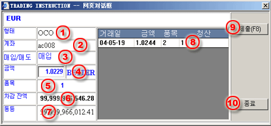

OCO 주문 하기
사용자가 청산 목적으로 제한/stop을 주문할 때, 동시에 OCO (One Cancel Other) 주문도 할 수 있다. OCO는 실행이 확인되면 다른 사람의 다른 주문을 취소하는 한 쌍의 제한 주문 (one for better and one for stop)이다. 주문 쌍은 동일한 위치의 정산을 위한 동일 양이다.
사용자가 첫 째 주문에 필요한 정보를 왼성하면, 무역 지시사항 대화창의 OCO 버튼을 마우스로 클릭함으로써 둘째 주문을 활성화시킬 수 있다. OCO가 나타나면, 사용자는 다음과 같은 정보를 채워야 한다:
| 1 | 유형 - OCO 주문 |
 OCO 주문 작성 대화창 |
| 2 | 계좌 - 선택 불가. 첫 번째 주문과 동일 | |
| 3 | B/S - 선택 불가. 첫 번째 주문과 동일 | |
| 4 | 가격 - 거래 개시할 가격 입력 | |
| 5 | Lot - 선택 불가. 첫 번째 주문과 동일 | |
| 6 | 차액잔고 - 선택된 계좌의 한계/여유 잔고 | |
| 7 | 순가 - 선택된 계좌의 한계 순가 | |
| 8 | 마감 - 바꿀 수 없음. 첫 번째 주문과 동일 | |
| 9 | 제출(F8) - 거래 데스크에 주문을 제출하기 위한 버튼 | |
| 10 | 퇴장 - 거래 지시사항 대화창을 퇴장하기 위한 버튼 |
OCO의 두 주문은 동일 참고 코드를 가지며 쌍의 주문이 성공적으로 되고 무역 데스크에 의해 수락되면
Working Order 패널에 미확인 상태로 리스트화 될 것이다. 미확인 상황은 주문이 실행을 위해 확인되지 않거나 취소되지 않는 한
보여질 것이다. 지시사항이 회사가 마련한 실행 요구사항을 만족시키면, 거래자는 주문을 확인하고 확인 표시와 실행된 주문 코드를 사용자에게 보낼
것이다. 그러면, 주문 상황이 확인으로 바뀌게 된다.
유의사항:
회사의 무역 규칙에 따라, 사용자는 미확인 상태에 있을 때 쌍 중 어느 주문도 취소가 가능하다. 주문이 성공적으로 취소되면, 쌍의 다른 주문도 동시에 취소될 것이다. 미확인 주문 취소하는 법 참조.